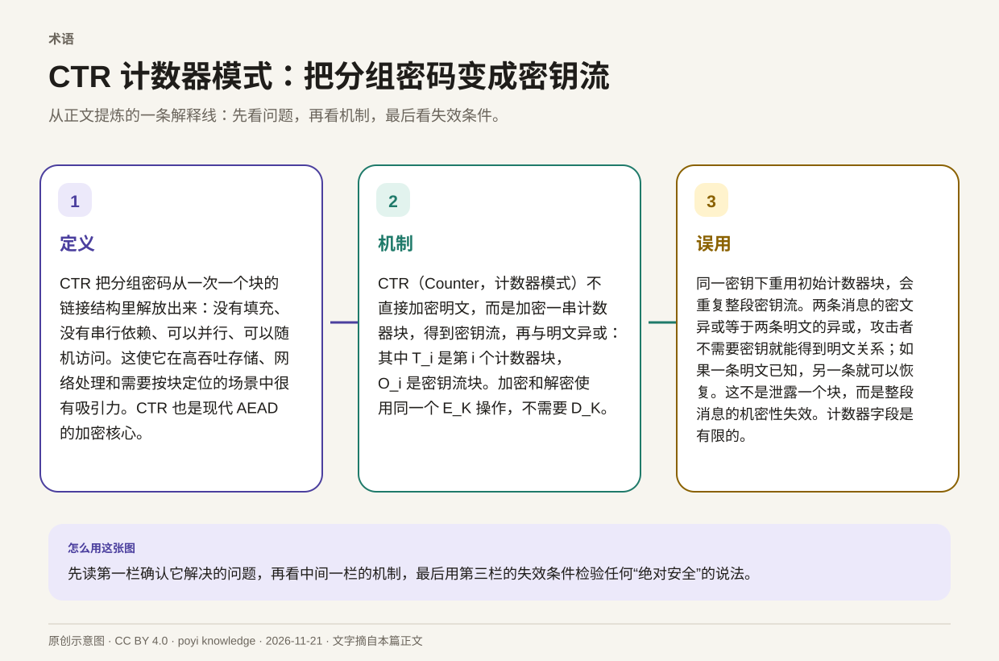

原理与机制
术语：CTR 计数器模式（Counter Mode (CTR)）。CTR（Counter，计数器模式）不直接加密明文，而是加密一串计数器块，得到密钥流，再与明文异或：
O_i = E_K(T_i)
C_i = P_i xor O_i
P_i = C_i xor O_i
其中 T_i 是第 i 个计数器块，O_i 是密钥流块。加密和解密使用同一个 E_K 操作，不需要 D_K。CTR 因此可以把分组密码当作流式生成器使用。计数器块必须满足唯一性：在同一个密钥下，任何两个块位置都不能使用相同的计数器块。对 CTR，标准要求的是唯一性而不是不可预测性：§5.3 规范地写出 IV 规则——IV 不必保密，而不可预测的要求是给 CBC 与 CFB 的——附录 C 重复了同样的话；这两处都不是对 CTR 说的，CTR 自身的要求是唯一性（§6.5）。附录 B.2 给出两条跨消息取得唯一性的做法：对前一条消息最后一个计数器块的 m 位继续套用标准递增函数，或者使用标准自己称为 message nonce 的东西，按 Tj = N | [j]m 拼接——前导位放 nonce，其余 m 位放索引。SP 800-38A 的标准递增函数只递增计数器块最右边的 m 位，并在 2^m 处回绕。m 的选择决定一个计数器序列能覆盖多少块；如果消息长度超过计数器空间，序列会重复，必须换密钥或换初始计数器块，不能继续使用。CTR 不需要填充：最后一个明文块可以不满一个分组，密钥流按字节异或即可，密文长度与明文长度相同。它也不需要链接，因此每个块的加密和解密都可以独立并行，支持随机访问。CTR 不改变底层分组密码的块大小或密钥长度。它改变的是如何把 E_K 的输出变成密钥流。

为什么重要
CTR 把分组密码从一次一个块的链接结构里解放出来：没有填充、没有串行依赖、可以并行、可以随机访问。这使它在高吞吐存储、网络处理和需要按块定位的场景中很有吸引力。CTR 也是现代 AEAD 的加密核心。GCM 用 CTR 生成密文，再用 GHASH 提供认证；理解了 CTR 的密钥流和计数器唯一性，才能理解 GCM 为什么对 nonce 重用如此敏感。但 CTR 只提供机密性。它没有认证标签，密文被修改会直接导致明文被修改；它也没有错误传播这种可检测的信号。计数器重用更是灾难性的：两条消息的密钥流相同，密文异或直接等于明文异或。
应用与实例
CTR 适合需要并行、随机访问或流式处理的多块数据场景。SP 800-38A 面向联邦机构和非政府组织的敏感信息保护，CTR 是其中定义的通用机密性模式之一。在协议设计中，CTR 通常不会单独出现，而是作为 AEAD 的组成部分。GCM 的内部加密步骤就是 CTR：它用计数器块生成密钥流，再把密文交给 GHASH 认证。协议层必须负责初始计数器块或 nonce 的分配，不能把 CTR 只要求唯一性误解为计数器可以重复。CTR 的密文长度与明文相同，这对需要保持记录长度或按扇区寻址的系统很重要；但长度保持本身不是安全属性，只是工程便利。
边界与攻击面
同一密钥下重用初始计数器块，会重复整段密钥流。两条消息的密文异或等于两条明文的异或，攻击者不需要密钥就能得到明文关系；如果一条明文已知，另一条就可以恢复。这不是泄露一个块，而是整段消息的机密性失效。### 计数器回绕
计数器字段是有限的。如果消息长度超过计数器空间，序列会回到起点，产生重复密钥流。协议必须限制单次消息的块数，或在回绕前换密钥/换初始计数器块。把 32 位计数器用于超过 2^32 个块的消息，是把唯一性要求交给运气。### 没有完整性
CTR 本身不认证密文。翻转密文的一个比特，会翻转明文的同一比特，攻击者可以做受控修改。需要完整性时，必须使用 AEAD，或外加 MAC 并正确组合。### 计数器管理
CTR 的要求是唯一性；IV 不必保密与 CBC/CFB 不可预测这两条要求出自 §5.3 与附录 C，说的是别的模式。实现必须把密钥 + 计数器块的组合管理好：跨消息、跨线程、跨重启都不能重复。随机初始值可以降低碰撞概率，但不能替代唯一性保证。本文教学实现只演示 AES-128-CTR 的公式、官方向量、并行性质和固定数据的重用关系。它不实现安全的计数器分配、跨消息状态、密钥管理、协议集成或侧信道防护，不能用于生产环境。
历史与背景
2001 年，NIST SP 800-38A 把 CTR 列为五种通用分组密码工作模式之一，并给出计数器块生成、标准递增函数和 AES 测试向量。与 1980 年 FIPS 81 只定义 ECB、CBC、CFB、OFB 相比，CTR 代表了对并行和流式处理需求的回应。2007 年，SP 800-38D 标准化 GCM 和 GMAC，把 CTR 作为加密核心与 GHASH 认证组合。此后，CTR 很少作为单独的机密性模式出现在新协议的主路径上，而是更多地作为 AEAD 的内部构件。这段历史说明，CTR 的价值和风险都来自同一个结构：密钥流只依赖密钥和计数器。这让并行和随机访问成为可能，也让计数器唯一性成为不可妥协的前提。
逐步示例与核验
SP 800-38A 附录 F.5 给出 AES-128-CTR 的四块示例。密钥是 2b7e151628aed2a6abf7158809cf4f3c，初始计数器块是 f0f1f2f3f4f5f6f7f8f9fafbfcfdfeff，明文四块是：
6bc1bee22e409f96e93d7e117393172a
ae2d8a571e03ac9c9eb76fac45af8e51
30c81c46a35ce411e5fbc1191a0a52ef
f69f2445df4f9b17ad2b417be66c3710
对应密文四块是：
874d6191b620e3261bef6864990db6ce
9806f66b7970fdff8617187bb9fffdff
5ae4df3edbd5d35e5b4f09020db03eab
1e031dda2fbe03d1792170a0f3009cee
本文用 Node/OpenSSL 复现这四块，并验证解密使用同一个 E_K 操作。### 重用初始计数器块
同一密钥和同一初始计数器块下，两条固定明文的密文异或等于明文异或。验证程序复算这个关系，再换一个初始计数器块，确认关系被打破。它说明 CTR 的安全前提是计数器唯一，而不是计数器保密。### 并行与随机访问
CTR 的第三个密文块可以单独解密，不需要先解密前两个块；验证程序直接计算第三个密钥流块并恢复对应明文，结果与完整解密一致。### 计数器递增与回绕
标准递增函数只改最右边的 m 位。用一个 8 位计数器做玩具演示，递增 256 次会回到起点；这说明计数器空间有限，回绕后继续使用就会重复密钥流。
参考出处
- Wikipedia search entry for CTR 计数器模式. https://zh.wikipedia.org/w/index.php?search=CTR%20%E8%AE%A1%E6%95%B0%E5%99%A8%E6%A8%A1%E5%BC%8F
- RFC 4949: Internet Security Glossary, Version 2. https://www.rfc-editor.org/rfc/rfc4949